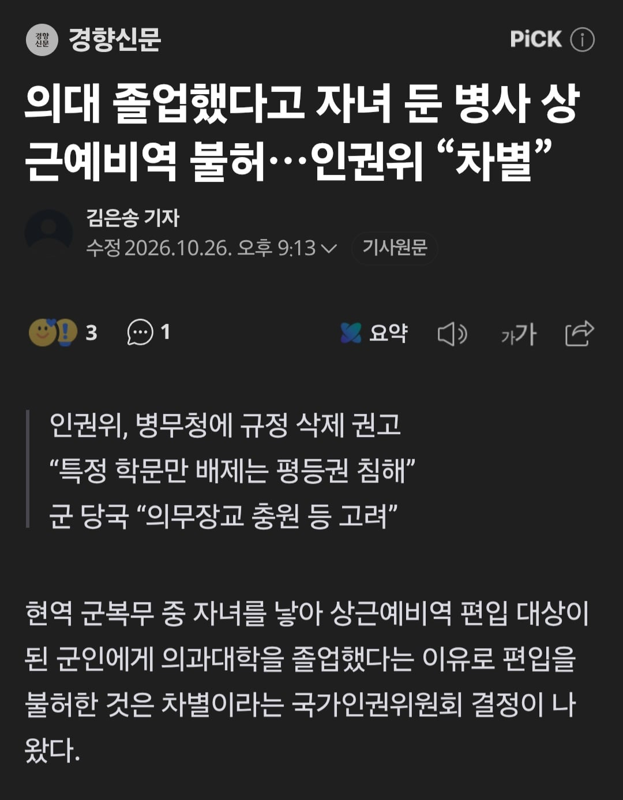

https://n.news.naver.com/article/032/0003478658?sid=100
의대 졸업생이 나라의 방향에 맞게 병사로 복무하다가
애를 가져서 상근으로 전환할 수 있었는데
빙무청이 의대졸업생이라고 안된다고 했다고 함
의치한수 졸업생은 상근예비역 당연히 제외라고 하네

https://n.news.naver.com/article/032/0003478658?sid=100
의대 졸업생이 나라의 방향에 맞게 병사로 복무하다가
애를 가져서 상근으로 전환할 수 있었는데
빙무청이 의대졸업생이라고 안된다고 했다고 함
의치한수 졸업생은 상근예비역 당연히 제외라고 하네
근데 인권위가 이야기하니까 좀 띠껍네
병신이 맞말하니까 뭔가 구린구석이 있을거같은 느낌
..?? 쟤네가 저런 일 하는 애들인걸
하지만 쟤네가 맞는말을 하는건 고장난 시계보다 더 적음
쟤네가 맞는말한거 처음보는거같음
멈춘 시계가 아니라 지멋대로 빨리갔다 느리게갔다 하는 시계니까
인권위가 범죄자와 가해자 인권 보호 단체가 아니었다니!
닉값 꼬라지가...
의사정원 늘려야 한다고 생각하는 나조차
'아 이건 좀....' 소리 나오네 ㅋㅋ
의치한 나오면 군의관 으로 복무하게
차별도 해석ㅈ대로네
인권위는 아무런 힘도 없음 그냥 "권고"고 예 조까세요 하면 됨
이걸 조까세요 하자고?
ㅇㅇ "불수용"하고 적당히 아무런 개소리나 붙여서 날려버리면 됨 딱히 뭐 정당한 이유 그런 조항도 없음
조까세요 하자가 아니라 조까세요 할거다, 이거 같은데???
상근이 있는 이유가 저건데 저걸 안보낸다고? 진짜 좆무청 좆방부 ㅋㅋㅋㅋ
병사라잖아
그렇네...
의대졸업생 고급 인력이니까 상근 못빼간다는거네
역겨운 ㅈ방부 ㅈ무청 씨발새끼들 ㅋㅋㅋ
"강제징용의 아픔"
아니 저건 왜 안해주는데 병신들
시장가 대비 아주 저렴한 인력들은 끌고가면 이득이 더 크니까